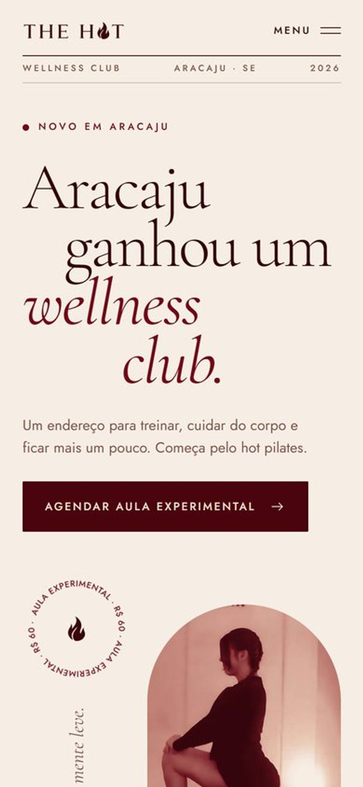
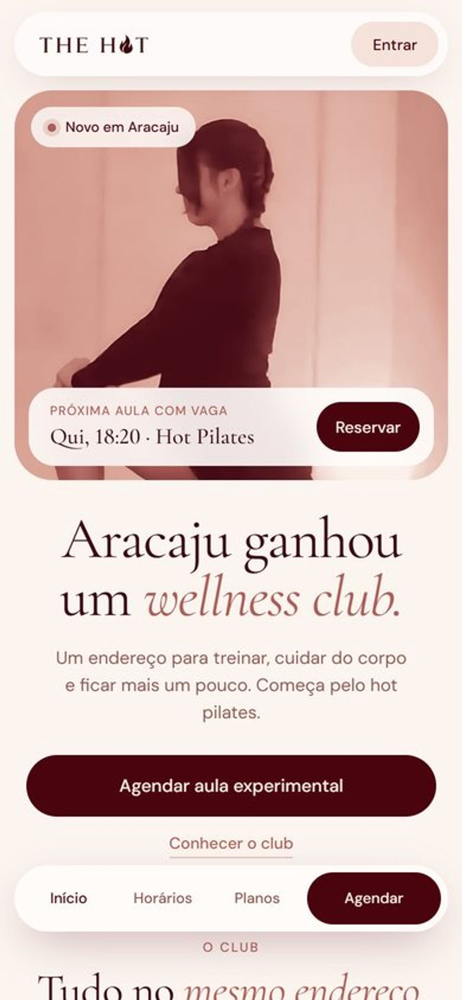
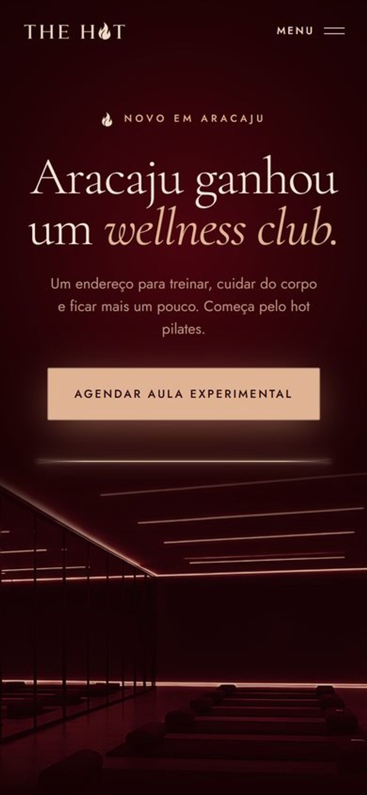

Três linhas de design.
O conteúdo é o mesmo nas três. O que muda é só o desenho. Abra cada uma no celular e diga qual linha seguir.

AEditorialPapel claro, título grande que ocupa a tela, foto em arco, bilhete da aula experimental e horários em quadro, como uma revista.

BSuaveRosado claro, tudo com cantos redondos e cartões macios, com jeito de aplicativo. A mais próxima do que a Cora faz.

CNoiteO mundo do painel da marca: vinho fundo, linhas de luz e o champanhe como destaque.